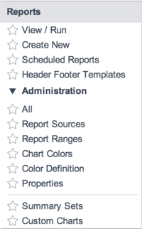

Reporting
| |
Note: This article applies to Fuji and earlier releases. For more current information, see Reporting at http://docs.servicenow.com
The ServiceNow Wiki is no longer being updated. Visit http://docs.servicenow.com for the latest product documentation. |
Contents
1 Overview
ServiceNow reports can be lists, charts, or calendar-based views of data in a particular table. The ServiceNow system also offers a range of predefined reports that pertain to applications and features like incident management and service catalog requests. If none of the predefined reports meet your needs, you can create your own reports. Use reports on homepages to display key information to different users. You can also publish reports to a URL that can be emailed.
In ServiceNow reporting, you can control the following aspects of reports:
You can generate ServiceNow reports manually or according to a schedule. Depending on which approach you choose and your product version, a different charting engine may be used. For more information, see Report Generation Methods.
2 Video Tutorials
The following video tutorials explain essential concepts for reporting on the ServiceNow platform and demonstrate report functionality.
| Reporting Tutorials |
|---|
3 Report Visibility
You can control who sees reports by making them:
- Globally visible to all users.
- Visible only to the report creator.
- Visible to one or more specific users.
- Visible to one or more specific groups.
Report visibility controls which users can access individual reports. A reporting user must satisfy any requirements for the report itself, such as being a member of a group the report is shared with.
ACLs control access to the underlying table data. List reports require the reporting user to satisfy ACLs on the target table to view records in the list. Users without sufficient permissions may see filtered list reports.
Reports that present aggregate data, such as pie or bar charts, do not require the user to satisfy target table ACLs to view the chart. These reports are not filtered due to security, though may be filtered by an on-query business rule defined for the target table. ACLs are required to view the list of records when you click on a portion of a chart.
4 Report Types
You can generate the following types of reports, organized by category:
| Report | Description |
|---|---|
| List | |
| List | Displays data in the form of an expandable list, similar to a standard ServiceNow list. |
| Time Series Charts | |
| Line | Shows how one or more values change over time by connecting a series of data points with straight lines. |
| Column | Shows how one or more values change over time by displaying them as proportional vertical columns. Available starting with the Fuji release. |
| Area | Resembles line charts, but the area between the axis and line is commonly emphasized with colors. Available starting with the Fuji release. |
| Spline | Shows how one or more values change over time by connecting a series of data points with a fitted curve through the data points. Spline charts let you take a limited set of known data points and approximate intervening values. Available starting with the Fuji release. |
| Column and Bar Charts | |
| Bar | Shows rectangular bars with lengths proportional to the values that they represent. The bars can be plotted vertically or horizontally. |
| Pareto | Combines bar and line charts to identify the most important factors in a large set of factors. |
| Histogram | Provides visual interpretation of numerical data by indicating the number of data points that lie within a range of values. |
| Pies and Donuts | |
| Pie | Shows how individual pieces of data relate to the whole. |
| Donut | Compares the size of parts to the whole. Donut charts are similar to pie charts, but the donut chart has empty space in the middle. Available starting with the Fuji release. |
| Semi-donut | Compares the size of parts to the whole. The difference between a donut and a semi-donut chart is that a semi-donut is a donut sliced in half. Available starting with the Fuji release. |
| Dials | |
| Speedometer | Shows an overview of the count of an indicator you want to measure at this moment. Speedometers and dials are similar but vary slightly in presentation. A speedometer shows numbers in the form of a round meter. A dial shows a half circle, where the part in which scores are shown is filled out with a color. Available starting with the Fuji release. |
| Dial | Shows a quick and simple overview of the count of an indicator you want to measure at this moment. Available starting with the Fuji release. |
| More | |
| Pivot table | Aggregates data from a table to display the source of summarized data. |
| Funnel | Displays values as progressively decreasing proportions. The size of the area is determined by the series value as a percentage of the total of all values. Available starting with the Fuji release. |
| Calendar | Displays data-driven events in a calendar format. |
| Pyramid | Displays a variation on a bar chart that uses pyramid shapes instead of horizontal rectangles. Available starting with the Fuji release. |
| Box | Shows the distribution of values in a data set. |
| Trend | Shows how the value of one or more items changes over time. Values along the horizontal axis of the trend chart represent the time measurement. Values on the vertical axis represent the changes to the items being monitored. The trend line or curve reveals a general pattern of change. |
| Control chart | Displays data as a series of connected points to determine whether or not a business process is in a state of statistical control. |
| Trendbox | Shows the difference between groups over time. |
5 Report Generation Methods
You can generate a report manually at any time. These on-demand reports are useful for capturing information at the moment, such as the number of incidents assigned to you right now. See Generating Reports for more information.
You can also schedule reports to generate on a regular basis. See Scheduling and Publishing Reports for more information.
The charting engine you use depends on the version of the ServiceNow platform you are running.
{kind=link}
Note: Highstock and Highcharts are owned by and licensed through Highsoft.
6 Report Output Formats
You can publish reports in the following output formats. You can schedule all of these reports for regular export.
| Report Format | Description |
|---|---|
| Displays as a Portable Document Format (PDF) file in either portrait or landscape orientation. PDF reports include the chart grid data. | |
| Excel | Displays as a Microsoft Excel spreadsheet. |
| PNG | Displays as a Portable Network Graphic (PNG) file. |
| CSV | Displays as a comma-separated value (CSV) plain-text file. |
7 Reporting Roles
By default, the following roles can access reports.
Notes:
- Users must have the itil role to see the Reports module on the application navigator (left navigation pane).
- Users with any reporting role or the itil role can access the following report options for all reports that are visible to them: Insert, Insert and Stay, and Export to PDF.
- In the table below, the term manage indicates access to the following report options: Update, Delete, Sharing, and Export settings.
| Role title [name] | Description |
|---|---|
| report administrator [report_admin] |
Can manage, publish, and schedule all reports. Can access Reports >Administration and manage all report-related objects. The report_admin role inherts all other report roles. |
| itil [itil] |
Can access Reports on the application navigator. Can manage reports listed in My reports. |
| global report user [report_global] |
Can manage reports that are shared with everyone (listed in Global). |
| group report user [report_group] |
Can manage reports that are shared with groups the user belongs to (listed in Group). |
| report publisher [report_publisher] |
Can Publish reports that they can manage. Publishing a report creates public a link to that report. Users with this role must also have another role that grants permission to create and edit reports. |
| report scheduler [report_scheduler] |
Can Schedule emailing of all reports that they can see, including reports they cannot manage. Users with this role must also have another role that grants permission to create and edit reports. |
| gauge maker [gauge_maker] |
Can create gauges from reports and charts. Can add gauges to homepages with the Add to Dashboard option. |
8 Menus and Modules
The Reports application includes the following modules.
|  |
|
{kind=link}
9 Activating the Report Charting v2 plugin
The Report Charting v2 plugin is automatically activated and the charting v2 engine is enabled for new instances and product upgrades starting with the Eureka release. For the Dublin release, the Report Charting v2 plugin is automatically activated and the charting v2 engine is enabled for new instances. For instances upgrading from an earlier release, administrators can activate the plugin and enable the charting v2 engine.
| Click the plus to expand instructions for activating a plugin. |
|---|
|
If you have the admin role, use the following steps to activate the plugin.
|
After activating the Report Charting v2 plugin on instances upgraded from a release prior to Dublin, enable the charting v2 engine:
- Enter sys_properties.list in the navigation filter.
- Locate the glide.report.use_charting_v2 system property.
- Set the value to true.
10 Enhancements
10.1 Fuji
- After upgrading, Report Charting v2 is automatically used and Reporting v1 can no longer be used.
- A redesigned Reports list is available. New ServiceNow instances use the Fuji Reports list. Existing ServiceNow instances can activate the Fuji Reports list by navigating to Reports > Administration > Properties and setting Use new view/run report list layout (glide.ui.report.new_home) to Yes. This reports list uses platform ACLs to control access instead of hardcoded role requirements.
- The following extra chart types are available: column, speedometer and dial, donut and semi-donut, funnel, pyramid, area, and spline.
- The chart type vertical bar has been merged into the chart type bar. These chart types were nearly the same and conveyed the same information. Existing vertical bar charts are automatically converted into regular bar charts when opened.
- The Number of reports that are categorized as heavy (with the greatest execution time) (glide.report.new_home.heavy) property specifies the number of performance-intensive reports that are displayed from the Heavy tab of the Reports list. The property defaults to 25. Users with the report_admin role can view this tab.
- The Number of reports shown in most used reports (glide.report.new_home.most_used) property specifies the number of most used reports that are displayed from the Most used tab of the Reports list. The property defaults to 25. Users with the report_admin role can view this tab.
- The Number of days that a report is not used to categorize it as an unused report (glide.report.new_home.unused) property specifies the number of days that a report must remain unused before it can be displayed from the Unused tab of the Reports list. The property defaults to 180. Users with the report_admin role can view this tab.
- A redesigned report designer form is available. Fields are grouped into logical units on the designer, such as data settings, visualization settings, chart options from the gear icon (
 ), and sharing settings from the Save choice list.
), and sharing settings from the Save choice list. - Chart types are organized by category in the Type choice list on the report designer form.
- The Edit module has been renamed to All. It is found at Reports > Administration > All. Users with the report_admin role can edit all reports directly from the report designer form, or open and edit a report.
- Report sources can be used to create predefined data sets for reports based on the same table and conditions. You can save conditions you have used for a report as a report source, so you can reuse them for other reports.
- Pie, donut, semi-donut, pyramid, and funnel charts can display aggregate information.
- Aggregate calculations can be performed on currency fields.
- Chart types that support the Stacked Field choice list can display stacked values as a single column/bar or as a group of columns/bars.
- Chart types that support the Aggregation choice list have the Count Distinct option.
- Options to configure data labels, titles, legends, axis grids, axis labels, chart sizes, and more, depending on the chart type.
- A drill-down view can be specified for charts with drill-down capabilities. If you click a table or chart, detailed records are shown according to the view you selected.
- Users with the report_admin role can assign roles to reports visible to everyone directly from the report designer form.
- Administrators can add a chart on a form by navigating to Configure > Form Layout.
- The default color scheme defined in the glide.ui.chart.default.colors property has been changed. For new instances, this color scheme is automatically applied. For upgraded instances, the existing default color scheme is used.
10.2 Eureka
- The Highcharts charting engine can generate both scheduled and on-demand reports.
- Chart context menu with options to save charts as JPG or PNG image files.
- Create new module that allows users to create a report without having to enter through the Reports list.
- Properties module that lets administrators modify some reporting properties.
- Report Charting V2 is enabled by default for new instances and product upgrades.
- Reports can be edited without having to be run first.
10.3 Dublin
- An enhanced charting engine renders charts on the client rather than the server, making chart rendering faster.
- Charts now use the Highcharts charting engine when generating reports from View > Run. Scheduled reports, exported reports, custom charts, and dials not of type report still use the JFreeChart charting library.
- Clicking a legend icon in a stacked bar or pie chart generated using the charting v2 plugin displays or hides the corresponding section of the chart.
- The glide.chart.drill.open_new_win system property specifies whether to open a new window or refresh the existing window when a user clicks a report element for more details. This property is applicable to charts generated using the charting v2 plugin.
- The glide.ui.chart.use_full_color_palette system property, when set to false, causes all bars in bar and pareto charts to use only a single color unless stacking is applied.
- The glide.ui.chart.color system property causes all bars in bar charts to use only a single color unless stacking is applied. This property applies to bar charts when the glide.ui.chart.use_full_color_palette is set to false. This property is applicable to charts generated using the charting v2 plugin.
- X and Y axis labels are more descriptive. The alignment of the axes can also be modified. This property is applicable to charts generated using the charting v2 plugin.
- If the glide.ui.section508 system property is set to true, a table containing report data is displayed when a report is generated. This property is applicable to charts generated using the charting v2 plugin.
- A Display percentages choice list is now available when generating reports that use bar, trend, or line charts. Users can select different methods for calculating percentages for elements in a data set. This property is applicable to charts generated using the charting v2 plugin.
- Reports that use the groups, users fields are affected when you upgrade to Dublin. Groups and users are no longer stored in those fields but in a new table sys_report_users_groups.
11 Reporting Upgrade
In Fuji, the logic behind how sys_report ACLs were applied changed. If you upgrade from a release before Fuji to Fuji or later without the Report Security - enforce access control checks plugin enabled, changes in report access may occur. For example, users without the admin role may lose read access to reports because of security constraints.
Because the Report Security plugin overrides ACL customizations, it is not enabled by default upon upgrade. You must enable it manually.
Follow these steps to enable the plugin. You can enable it before or after upgrade.
- Activate the Report Security (com.glideapp.report_security) plugin on a sub-production instance and test to ensure activation does not cause changes to existing reporting functionality.
- After testing is completed, activate the plugin in production.
If changes in reporting functionality persist after you activate the plugin, this may be because ACLs were improperly updated because of customizations. Manually update your sys_report ACLs to comply with the ACLs below.
sys_report write ACL
var answer = false;
var userID = current.user.toString();
var isMe = gs.getUserID() == userID;
var isGlobal = userID == "GLOBAL";
if (isMe || gs.hasRole('report_admin'))
answer = true;
else if (isGlobal)
answer = gs.hasRole('report_global');
else if (isGroup())
answer = gs.hasRole('report_group');
function isGroup(){
var reportUserId = current.user.toString();
if (reportUserId != "group"){
return false;
}
var grpList = gs.getUser().getMyGroups();
var myGrps = '';
for (var i = 0; i != grpList.size(); i++) {
if (i != 0) myGrps += ',';
myGrps += grpList.get(i);
}
var myUserId = gs.getUserID();
var gr = new GlideRecord('sys_report_users_groups');
gr.addQuery('report_id', current.getUniqueValue());
var qc = gr.addQuery('user_id', myUserId);
if (myGrps != '')
qc.addOrCondition('group_id', 'IN', myGrps);
gr.query();
if (gr.getRowCount() > 0)
return true;
return false;
}
sys_report create ACL
var userID = current.user.toString();
var answer = false;
var isMe = gs.getUserID() == userID;
var isGlobal = userID == "GLOBAL";
if (gs.hasRole('report_admin'))
answer = true;
else if (isGlobal)
answer = gs.hasRole('report_global');
else if (current.user == 'group')
answer = gs.hasRole('report_group');
else
answer = gs.hasRole(current.roles);
function isGroup(){
var grpList = gs.getUser().getMyGroups();
var myGrps = '';
for (var i = 0; i != grpList.size(); i++) {
if (i != 0) myGrps += ',';
myGrps += grpList.get(i);
}
var myUserId = gs.getUserID();
var gr = new GlideRecord('sys_report_users_groups');
gr.addQuery('report_id', current.getUniqueValue());
var qc = gr.addQuery('user_id', myUserId);
if (myGrps != '')
qc.addOrCondition('group_id', 'IN', myGrps);
gr.query();
if (gr.getRowCount() > 0)
return true;
return false;
}
sys_report delete ACL
var answer = false;
var userID = current.user.toString();
var isMe = gs.getUserID() == userID;
var isGlobal = userID == "GLOBAL";
if (isMe || gs.hasRole('report_admin'))
answer = true;
else if (isGlobal)
answer = gs.hasRole('report_global');
else if (isGroup())
answer = gs.hasRole('report_group');
function isGroup() {
var reportUserId = current.user.toString();
if (reportUserId != "group"){
return false;
}
var grpList = gs.getUser().getMyGroups();
var myGrps = '';
for (var i = 0; i != grpList.size(); i++) {
if (i != 0) myGrps += ',';
myGrps += grpList.get(i);
}
var myUserId = gs.getUserID();
var gr = new GlideRecord('sys_report_users_groups');
gr.addQuery('report_id', current.getUniqueValue());
var qc = gr.addQuery('user_id', myUserId);
if (myGrps != '')
qc.addOrCondition('group_id', 'IN', myGrps);
gr.query();
if (gr.getRowCount() > 0)
return true;
return false;
}
sys_report read ACL
answer = false;
var userID = current.user.toString();
var isUser = gs.getUserID() == userID;
if (isUser) {
answer = true; // my own report
} else {
var isGlobal = userID == "GLOBAL";
if (isGlobal)
answer = gs.hasRole(current.roles);
else
answer = isGroup();
}
function isGroup() {
var reportUserId = current.user.toString();
if (reportUserId != "group"){
return false;
}
var myUserId = gs.getUserID();
var grpList = gs.getUser().getMyGroups();
var myGrps = '';
for (var i = 0; i != grpList.size(); i++) {
if (i != 0) myGrps += ',';
myGrps += grpList.get(i);
}
var gr = new GlideRecord('sys_report_users_groups');
gr.addQuery('report_id', current.getUniqueValue());
var qc = gr.addQuery('user_id', myUserId);
if (myGrps != '')
qc.addOrCondition('group_id', 'IN', myGrps);
gr.query();
if (gr.getRowCount() > 0)
return true;
return false;
}
More information
Preserve users' ability to view shared reports by activating the Report Security plugin